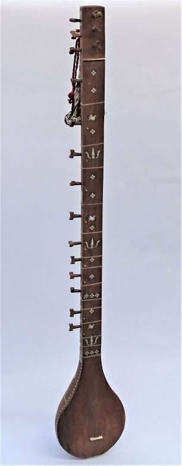
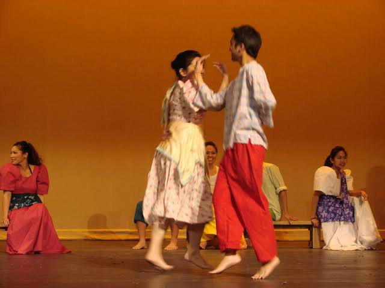
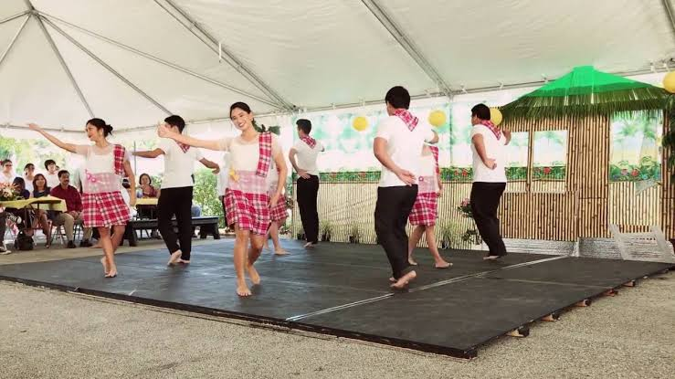
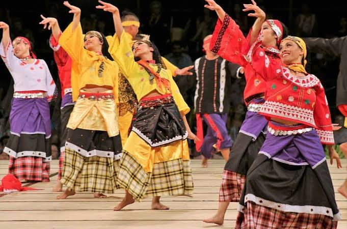
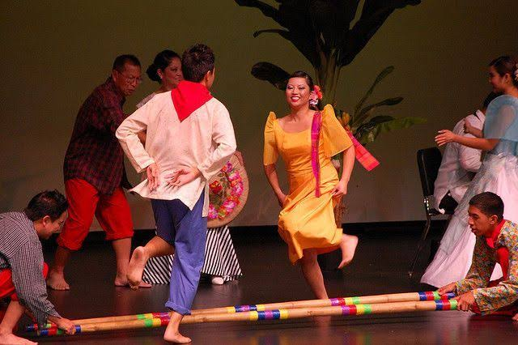

Different Waray Instruments
Filipinos are known for their love on their own culture, preserving and passing it until the next generation. The Waray people holds a similar devotion, possessing a diverse cultural heritage that makes their identity and traditions unique as other Filipino indigenous group. Their art forms are highly developed and preserved, holding a significant place in their culture, It includes performing arts, music, dance, spoken literature, poetry, crafts, and cuisine. Religion is also a major factor of the Waray culture as it underlies their worldview. Waray songs include the “laylay” (folk song), “haya” (dirge), and “awit” (seafarers' song sung during voyages). There are also many love songs and drinking songs. In addition, there are traditional songs sung while people are working, walking, and traveling. Waray music uses traditional instruments, such as the following:
Kudyapi

Kudyapi - a two-stringed instrument made from a single piece of wood; it is played only by men to accompany a woman chanting verse.
Agong or Agung - a set of two wide-rimmed, vertically suspended gongs. There are three sizes of agongs. From smallest to largest, the sizes are sangleis, sanquiles, and burney.
Agung

Tambur
Tambur - a two-stringed bowed instrument similar to a lute
Korlong - a stringed instrument played only by women and made from the cane of tigbao, or wild grass with razor-sharp edges.
Korlong

Banduria

Bandurria - a small fourteen-stringed instrument
Tambor - a type of drum made from wood and animal skin; it is played using two sticks
Tambor

Gabbang

Gabbang - a xylophone-like instrument made from bamboo or wood, with a series of wooden bars that are struck with mallets.
Different Waray Dances
Waray traditional dances are performed during celebrations, such as weddings and seasonal festivals. These dances include the following:
Kuratsa
Kuratsa - a courtship dance performed by a man and woman who dance together playfully, moving in sync with the rhythm of the music and using scarves to accentuate their movements
Surtido - usually performed by a group of eight dancers in colorful costumes and using intricate footwork
Surtido
Binanog
Binanog - depicting the movements of birds in flight, the dancers wear colorful costumes resembling feathers
Tinikling - a bamboo dance that involves the tapping of long bamboo poles that dancers dance in and out of while the bearers tap the poles in a specific rhythm
Tinikling
